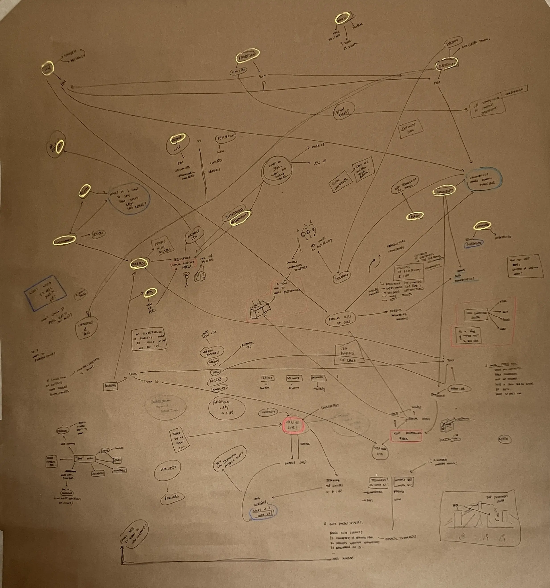

class: middle ##note for reviewer: this presentation won't make sense without me speaking through it. if you're still interested, i would redirect you to my <a href = "https://arjunmakesthings.github.io/itp-blog/thesis/brainwrite-7_260827" target = "_blank">written thesis-proposal</a> & <a href = "https://arjunmakesthings.github.io/itp-blog/thesis/2608-mapping" target = "_blank">mind-map</a> for connections (with past projects; interests; et-cetera). --- class: middle # thesis-1. .footnote[arjun; 260905.] --- class: middle <figure> <p></p> <figcaption>map-1; winter - spring, 2026.</figcaption> </figure> --- class: top, left background-image: url("../assets/media/260905_thesis-1/2605_mind-map.webp") --- class: middle <figure><iframe width = "889" height="500" src="https://www.youtube.com/embed/QQc5opd40JM?si=fOHDvksuONgmP3Bt&start=25" frameborder="0" allow="encrypted-media" allowfullscreen></iframe><figcaption>collective thesis-brainstorming; july, 2026.</figcaption></figure> --- class: middle <figure><iframe width = "889" height="500" src=" https://www.youtube.com/embed/DVZ5Qw7cKiY?si=WBcMuuClFh_NbFNi&start=35" frameborder="0" allow="encrypted-media" allowfullscreen></iframe><figcaption><i>what's the thesis?</i>; august, 2026.</figcaption></figure> --- class: middle <figure> <img src = "https://arjunmakesthings.github.io/itp-blog/z_images/master.webp"> <figcaption>master image; 8x4 ft.</figcaption> </figure> --- class: middle <figure> <img src = " https://arjunmakesthings.github.io/itp-blog/z_images/28_the-thesis-is-not-art.webp"> <figcaption>the thesis is not art. from <i>what's the thesis?</i>; august, 2026.</figcaption> </figure> --- class: middle <figure> <img src = "https://arjunmakesthings.github.io/itp-blog/z_images/4_research.webp"> <figcaption>past-theses references. from <i>what's the thesis?</i>; august, 2026.</figcaption> </figure> --- class: middle <figure> <img src = "https://arjunmakesthings.github.io/itp-blog/z_images/10_good-project-at-itp.webp"> <figcaption>a 'good' project at itp. from <i>what's the thesis?</i>; august, 2026.</figcaption> </figure> --- class: middle <figure> <img src = "https://arjunmakesthings.github.io/itp-blog/z_images/3_itp-projects.webp"> <figcaption>a 'good' project at itp. from <i>what's the thesis?</i>; august, 2026.</figcaption> </figure> --- class: top, left background-image: url("https://arjunmakesthings.github.io/itp-blog/z_images/3_itp-projects.webp") --- class: middle # emergent complexity. --- class: middle left ## a system composed of simple parts where the collective behaviour is complex. -- .grey[(the outcome can't be determined by studying individual parts.)] .footnote[from <i>dynamics of complex systems</i>, by yaneer bar-yam.] --- class: middle <figure> <img id = "white" src = "../assets/media/260804_software-study/ca_1.webp"> <figcaption>1-d cellular automata; from a new kind of science, by stephen wolfram.</figcaption> </figure> --- class: middle ``` js // define rule: const rule = { 0b111: 1, 0b110: 0, 0b101: 1, 0b100: 0, 0b011: 0, 0b010: 1, 0b001: 0, 0b000: 1, }; ``` <figcaption>rule-set.</figcaption> --- class: middle <figure> <img id = "white" src = "../assets/media/260804_software-study/ca_2.webp"> <figcaption>1-d cellular automata; from a new kind of science, by stephen wolfram.</figcaption> </figure> --- class: middle <figure> <img id = "white" src = "https://www.wolframscience.com/nks/img/inline/page1186b.png"> <figcaption>1-d cellular automata ruleset; from <a href = "https://www.wolframscience.com/nks/notes-12-10--minimal-cellular-automata-for-sequences/" target = "_blank">wolframscience</a>.</figcaption> </figure> --- class: middle ## the world may be better understood as the execution of simple-programs in nature, as opposed to models of continuous mathematics. --- class: middle <figure> <img id = "white" src = "https://arjunmakesthings.github.io/itp-blog/z_images/game-of-life.gif"> <figcaption>2-d cellular automata; game of life rules, by john conway.</figcaption> </figure> --- class: middle <figure> <img id = "white" src = "https://arjunmakesthings.github.io/itp-blog/z_images/automaton-research-color.webp"> <figcaption>color explorations with cellular-automata, to explain biological phenomena.</figcaption> </figure> --- class: middle <figure> <img id = "white" src = " https://arjunmakesthings.github.io/itp-blog/z_images/Screenshot-2026-08-27-at-16.52.09.webp"> <figcaption>l-systems & leafs, from a new kind of science, by stephen wolfram.</figcaption> </figure> --- class: middle ## i argue that there <i>could</i> be more. --- class: middle ## explore alternative paradigms for rule-based systems (currently cellular-automata) to be expressed in. --- ## this may include: - redefining what a pixel may be (for cellular automata) - breaking away from the structure of a 2-dimensional grid - removing assumptions such as positions of a ‘pixel’ being static or that a ‘pixel’ may only change its light (and color) - that cellular automata must always be ‘seen’ (as opposed to ‘felt’). - … and so on. --- class: middle ## i envision a <mark>collection of small prototypes</mark> (perhaps <mark>no bigger than handling 5x5x5</mark> automata); each of which would be capable of ‘running’ any rule-based system in such a way that a person can compare the experience of the same automata on system-a versus system-b. --- class: middle ## all 'alternative-display' research focuses on how well a system represents an image. ## we don't care about that — we care about the perceivable expression of a rule-set. --- class: middle ## <a href = "https://arjunmakesthings.github.io/itp-blog/thesis/brainwrite-7_260827" target = "_blank">better, written proposal -> </a> ## <a href = "https://arjunmakesthings.github.io/itp-blog/thesis/ultrasonic-voxel-suspension" target = "_blank">ultrasonic-suspension of 'voxel' experiment -></a> --- class: middle ## :]